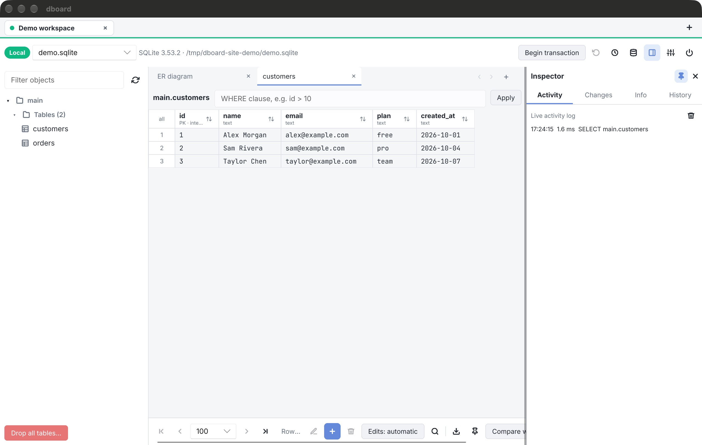

Follow the data.
Filter a table, run a query, inspect its schema and trace relationships in an ER diagram. Keep several connections and query tabs open as you work.
For the everyday database jobs: investigate a row, run a query, review a change. PostgreSQL, MySQL / MariaDB, SQLite and MongoDB in a native Rust desktop app.
MIT licensed, including commercial use. macOS / Windows / Linux.
Captured from the running macOS app, connected to a local SQLite database with sample data. Open an image to inspect the interface at full size.

These are desktop capabilities. Availability depends on the database engine; the screenshots above use SQLite. Read the feature guide and limitations ↗
Find the row you need, understand how it connects, and review what you’re about to write. dboard keeps the data and the tools to work on it together.
Filter a table, run a query, inspect its schema and trace relationships in an ER diagram. Keep several connections and query tabs open as you work.
Enable staged edits to review old and new values before applying them in a transaction. Use read-only connections, production confirmations and the activity inspector to keep the context visible.
Save queries in folders, reuse snippets, revisit query history and reopen your connections. Reach commands and database objects from the keyboard.
A native Rust desktop client for macOS, Windows and Linux, with MIT-licensed source you can inspect, modify and use commercially. Connect directly to your databases.
Start with a development database and a query you use every day.
dboard is a Rust workspace with a Slint desktop UI and separate database drivers. Read the implementation, run it locally, and help shape what comes next.
git clone https://github.com/alcolopa/dboard.git
cd dboard/dboard-cross
cargo run --locked -p dboard
Requires Rust and platform build dependencies. See the developer guide for setup and tests.
Report a bug or suggest an improvement →Download a published release, or build from source. Available packages depend on the latest release; every button falls back to GitHub release notes.
Separate builds for Apple Silicon and Intel Macs. Unzip it and drag it to Applications.
Signing depends on the release. Check its notes before installing; macOS may ask you to approve the first launch.
Setup installer for x64 and ARM64: Start menu entry, optional desktop shortcut, uninstaller. No runtime to install.
CI builds this, but it hasn't been tested by hand on Windows yet. Bug reports welcome.
Packages for Debian/Ubuntu (.deb), Fedora (.rpm) and Arch (.pkg.tar.zst, x64), plus a tar.gz with an installer script for other distros. x64 and ARM64. Built with Rust and Slint, so it runs on X11 and Wayland.
Extract it and run ./dboard. Saved passwords need a Secret Service keyring.
.deb x64 .rpm x64 Arch x64 .tar.gz x64 .deb ARM64 .rpm ARM64 .tar.gz ARM64
Check release notes for signing and installation details. Browse all releases →
The source is available under the MIT license. You can build it yourself and modify it; third-party dependencies retain their own licenses.
PostgreSQL 16, MariaDB 10.11 and MongoDB have been tested. MongoDB user management has not yet been verified. Windows builds run in CI but have not been manually validated. See the developer guide for current limitations.
In immediate mode, confirming an edit writes to the database. Staged mode lets you review pending cell edits before applying them. Start with a local database and use a read-only connection when you only need to inspect data.
Try dboard on your platform, report a reproducible issue using sanitized example data, or submit a focused improvement. The contribution guide explains the repository, setup and checks.
If dboard is useful to you, an optional donation supports its development. Bug reports, testing and contributions are welcome too.
Send USDT using the Arbitrum One network to this address:
0x157F29dF2DF3760A96D8AbeFF9c0c93004Eb0de0
Check the token, network and destination address before sending.